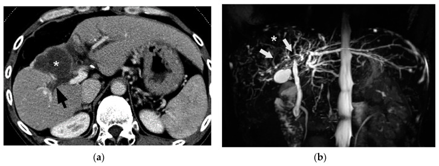
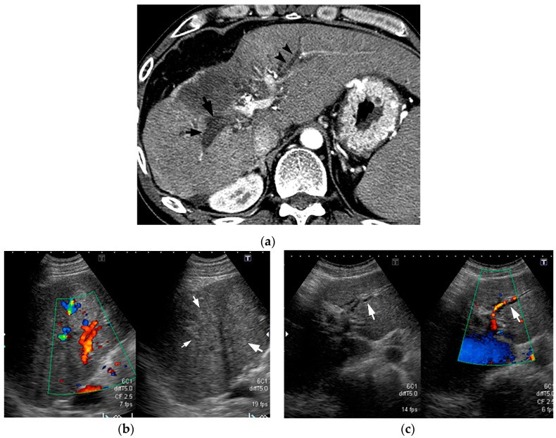

179 — Hoại tử ống mật & cholangiopathy thiếu máu sau can thiệp u gan (TACE/TARE/RFA): ống mật "giả giãn" và biloma
Tags: pattern:ong-giam-ty-trong pattern:biloma vung:gan vung:duong-mat protocol:CT-MRI-dong-hoc protocol:MRCP
Mức chắc chắn (certainty): tổng hợp y văn (literature synthesis) — bài tổng quan có ảnh minh họa của Kobayashi 2020 (Cancers, PMC7565329), bài tổng quan biến chứng TACE 2026 (PMC12835986), cohort DEB-TACE 2026 (PMC13204766), review biến chứng đốt nhiệt 2022 (PMC9147303) và nghiên cứu làm mát đường mật 2025 (PMC12153656). Số liệu trích trực tiếp; chỗ chưa có số ghi "chưa rõ".
1. Tổng quan bệnh học – cơ chế hình ảnh
- Giải phẫu quyết định biến chứng: ống mật lớn trong gan không có mạch máu riêng từ tĩnh mạch cửa mà được nuôi bởi đám rối mạch quanh ống mật (peribiliary vascular plexus, PBP) — mạch đến từ nhánh động mạch gan, mạch về đổ vào tĩnh mạch cửa/xoang gan. Ống mật lớn (ống gan > 800 μm, ống phân thùy 400–800 μm, ống vùng 300–400 μm) có PBP 3 lớp; ống nhỏ (vách 100–300 μm, tiểu thùy 15–100 μm) gần như không có PBP và không có tuyến quanh ống tiết nhầy → dễ tổn thương do thiếu máu và do acid mật hơn (Kobayashi 2020).
- TẠI SAO can thiệp động mạch gan gây hoại tử ống mật: TACE (và các can thiệp động mạch gan khác như TARE/HAIC) đưa vật liệu tắc/hóa chất vào nhánh động mạch nuôi u; PBP cũng nằm trong vùng tắc → thiếu máu cholangiocyte → mất hàng rào bảo vệ (nhầy của tuyến quanh ống, "ô dù bicarbonate", phospholipid) → acid mật thoát vào thành ống → hoại tử đông (coagulation necrosis) của thành ống và mô quanh ống → hoại tử ống mật (bile duct necrosis, BDN) → rò mật/biloma, hẹp, hoặc áp-xe.
- Vì sao gọi là "ống mật giả giãn": trên CT, BDN hiện thành cấu trúc hình ống giảm tỷ trọng chạy dọc khoảng cửa, trông y như ống mật giãn. Khác biệt cốt lõi: BDN không phải lòng ống chứa mật mà là thành ống hoại tử + mô quanh ống thấm mật, nên không thấy giãn thật trên siêu âm/MRCP, và đường kính không đều, có thể "dạng chuỗi hạt" như viêm xơ đường mật nguyên phát (PSC).
- Số liệu dịch tễ (định lượng):
- Nghiên cứu tử thiết: BDN sau TACE điều trị HCC gặp 9% (Kobayashi 2020).
- HAIC (truyền hóa chất vào động mạch gan): bất thường đường mật 57% trong hoặc 1–12 tháng sau điều trị (Kobayashi 2020).
- Tổng quan 2026: biến chứng đường mật sau TACE 0,26–6,5%; phân bố giãn ống mật trong gan 57,1%, biloma 25,7%, hẹp ống mật rốn gan 17,1%; biloma chia dạng nang tròn 55%, dạng phân nhánh 30%, hỗn hợp 15%; riêng biloma trong gan 1,04% (1.923 BN / 4.695 lần TACE) và 3,6% BN / 1,9% lần thủ thuật ở một cohort khác (PMC12835986).
- Cohort DEB-TACE: 14/106 (13,2%) có cholangiopathy thiếu máu, phát hiện trung bình 3,1 tháng sau TACE; 42,9% không triệu chứng; 5 ca nhập viện, 2 ca biloma nhiễm trùng cần kháng sinh/dẫn lưu; không có tử vong trực tiếp (PMC13204766).
- 90% ca BDN có huyết khối/tắc tĩnh mạch cửa kế cận; 20–65% biloma có triệu chứng; tử vong ở ca biloma sau TACE ~5–10% (Kobayashi 2020).
- TẠI SAO tín hiệu MRI như vậy: BDN là mô hoại tử + mật thấm → T2 tăng tín hiệu nhưng không sáng bằng dịch não tủy (khác nang mật đơn thuần); thì gan–mật (hepatobiliary phase) 20 phút sau Gd-EOB-DTPA → vùng BDN giảm tín hiệu so với gan lành vì không còn cholangiocyte lấy thuốc (Kobayashi 2020).
- Sau đốt nhiệt (RFA/MWA): u trung tâm, sát ống mật lớn dễ gây hẹp ống mật có ý nghĩa lâm sàng; hẹp ống phân thùy ngoại vi có thể không cần điều trị (Granata 2022). Biện pháp bảo vệ: làm mát đường mật bằng nước muối 4 °C qua ống mũi–mật, thể tích trung bình 150 mL (100–200 mL), ở u cách ống mật trung vị 1 mm (0–4 mm) — 9 ca không có tổn thương đường mật, 1 ca viêm đường mật sau đặt ống (Chou 2025).
2. Mẫu hình + chẩn đoán phân biệt theo vị trí (gamut)
Ba mẫu hình cần nhận ra sau can thiệp u gan:
- "Ống giảm tỷ trọng hình ống" (dọc khoảng cửa, sau TACE/HAIC):
- BDN/cholangiopathy thiếu máu (chốt: siêu âm/MRCP không giãn thật, đường kính không đều, nối với biloma, tắc TM cửa kế cận).
- Giãn ống mật thật do tắc (sỏi/u/hẹp miệng nối): giãn thuôn dần ra ngoại vi, thấy nguyên nhân ở phía dưới, thấy rõ trên MRCP.
- Huyết khối tĩnh mạch cửa (chốt: cavernous transformation, ngấm thuốc mạnh các mạch bàng hệ quanh; ngấm từng vùng thì động mạch thường có trong huyết khối cửa, không có trong BDN).
- Nang quanh ống mật (peribiliary cyst): nhiều nang nhỏ dọc TM cửa lớn, không nối với lòng ống.
- Bệnh Caroli: nang/ống giãn rải rác + dấu chấm trung tâm (central dot sign) = nhánh cửa trong nang.
- "Tổn thương dạng dịch sau can thiệp":
- Biloma (dạng tròn/phân nhánh/hỗn hợp; nối với ống hoại tử; tỉ trọng dịch, không ngấm thuốc).
- Ổ hoại tử sau đốt (post-ablation cavity): bờ mỏng, đều, teo dần theo thời gian; có thể có bóng khí sớm.
- Áp-xe: bờ dày không đều, khí/mức dịch, ngấm vòng, sốt + bạch cầu tăng.
- Mật tụ dưới bao (subcapsular biloma) sau đốt/sinh thiết.
- Giả phình động mạch gan: ngấm thuốc thì động mạch, đồng tỉ trọng mạch máu — không phải dịch.
- "Hẹp đường mật": hẹp do thiếu máu (đoạn dài, sau TACE, không có khối), hẹp do u (đoạn ngắn, bờ vai), hẹp sau đốt (ổ đốt sát ống), hẹp miệng nối (sau mổ nối mật–ruột).
Mnemonic "BILIARY": Biloma, Ischemic cholangiopathy/BDN, Leak (rò mật), Infection/abscess, Arterial pseudoaneurysm, Restriction/stricture, Yellow (vàng da do tắc) — mỗi chữ là một hướng đọc trên CT sau can thiệp.
3. Bảng so sánh phân biệt (ma trận đối chiếu)
| Thực thể (entity) | Hình ảnh điển hình | Chốt vào (rule-in) | Chốt loại (rule-out) | Gợi ý xác nhận |
|---|---|---|---|---|
| BDN / cholangiopathy thiếu máu | CT: cấu trúc hình ống giảm tỷ trọng dọc khoảng cửa, đường kính không đều, nối với biloma; T2 tăng nhưng < dịch não tủy; HBP giảm tín hiệu | CT "giãn ống" nhưng siêu âm/MRCP KHÔNG giãn thật + sau TACE + ALP tăng | Giãn thật (thấy rõ trên MRCP, thuôn ngoại vi) hoặc huyết khối cửa có bàng hệ → loại BDN | US đối chiếu + MRCP; theo dõi ALP/bilirubin |
| Giãn ống mật do tắc | Ống giãn thuôn dần ra ngoại vi; thấy sỏi/u/hẹp ở phía dưới | Thấy nguyên nhân tắc phía dưới + giãn rõ trên MRCP | Không có nguyên nhân tắc, ống không giãn trên MRCP → nghĩ BDN | MRCP; EUS/ERCP nếu cần |
| Huyết khối tĩnh mạch cửa | Cấu trúc giảm tỷ trọng trong lòng TM cửa; mạch bàng hệ dạng hang (cavernous transformation); ngấm từng vùng thì động mạch | Cavernous transformation + ngấm thuốc bàng hệ | Ngấm từng vùng đơn thuần không loại BDN (BDN tiến triển cũng có) | CT động học; Doppler |
| Biloma | Khối dịch tròn hoặc phân nhánh, tỉ trọng nước, không ngấm thuốc, nối với ống hoại tử | Nối trực tiếp với cấu trúc ống hoại tử + tỉ trọng dịch | Ngấm thuốc thì động mạch → giả phình; bờ dày + khí → áp-xe | CT/MRI; chọc hút nếu nghi nhiễm |
| Ổ hoại tử sau đốt | Vùng giảm tỷ trọng bờ mỏng, đều, teo dần; có thể có bóng khí sớm | Bờ mỏng đều + teo dần theo thời gian | Nốt/viền dày lệch tâm mới xuất hiện → tái phát tại chỗ | MRI động học + so sánh lần trước |
| Áp-xe sau can thiệp | Khối dịch bờ dày không đều, khí/mức dịch, ngấm vòng, phù mô xung quanh | Sốt + bạch cầu tăng + khí/mức dịch | Không triệu chứng, bờ mỏng, teo dần → ổ đốt lành | CT; chọc hút cấy |
| Peribiliary cyst / Caroli | Nhiều nang nhỏ dọc TM cửa lớn (peribiliary) hoặc nang thông với cây mật + central dot (Caroli) | Vị trí dọc TM cửa / central dot | Nối với ổ hoại tử và xuất hiện sau TACE → biloma/BDN | MRCP; so phim cũ |
4. Protocol chụp + theo dõi + thuật toán
Trước can thiệp (dự phòng):
- CTA bụng lập kế hoạch (biến thể động mạch, nhánh nuôi, mạch bàng hệ) + CBCT trong phòng DSA để chọn nhánh.
- TACE siêu chọn lọc (superselective) — trung tâm dùng kỹ thuật này có tỉ lệ biến chứng thấp hơn cTACE; B-TACE (bóng chặn đầu gần) giảm trào ngược vật liệu tắc (PMC12835986).
- U trung tâm sát ống mật (đặc biệt khi đốt nhiệt): cân nhắc làm mát đường mật bằng NaCl 4 °C qua ống mũi–mật, thể tích ~150 mL; khoảng cách u–ống trung vị 1 mm trong nghiên cứu (PMC12153656).
- Ngừng/giảm số đợt khi đã thấy BDN: Kobayashi 2020 khuyến cáo không TACE/HAIC thêm nếu phát hiện BDN vì nguy cơ biloma.
Theo dõi sau can thiệp:
- CT/MRI gan động học 4 thì đánh giá đáp ứng u theo LI-RADS (xem bài 121); cohort DEB-TACE phát hiện cholangiopathy trung bình 3,1 tháng → lần chụp 3 tháng rất quan trọng, không chỉ đọc u mà phải nhìn đường mật.
- Xét nghiệm: ALP tăng > 200 U/L ở 76,2% (16/21) ca tổn thương đường mật; bilirubin tăng muộn hơn → ALP là cờ sớm, đừng chờ vàng da.
- Siêu âm đối chiếu khi CT nghi "giãn ống": nếu siêu âm không thấy ống giãn → hướng BDN.
- MRCP (T2 3D) khi cần bản đồ đường mật, xác định hẹp/rò; MRI gadoxetic (HBP) giúp phân biệt BDN (giảm tín hiệu) với ống mật thật.
flowchart TD
A[Sau TACE/TARE/RFA: ALP tăng hoặc sốt, đau HSP phải] --> B[CT/MRI động học 4 thì]
B --> C{Có cấu trúc hình ống giảm tỷ trọng dọc khoảng cửa?}
C -->|Không| D[Đọc theo LI-RADS: đáp ứng u / tái phát / áp-xe]
C -->|Có| E[Siêu âm đối chiếu + MRCP]
E -->|Siêu âm và MRCP KHÔNG giãn thật| F[BDN / cholangiopathy thiếu máu]
E -->|Giãn thật, thuôn ngoại vi| G[Giãn do tắc: tìm sỏi, u, hẹp]
F --> H{Có biloma hoặc triệu chứng?}
H -->|Không| I[Ngừng TACE/HAIC thêm; theo dõi CT 3 tháng + ALP]
H -->|Có biloma không nhiễm| J[Dẫn lưu qua da nếu to/tăng kích thước; kháng sinh khi nghi nhiễm]
H -->|Nhiễm trùng, áp-xe| K[Dẫn lưu cấp + kháng sinh; cân nhắc stent đường mật]
J --> L{Không lành hoặc hẹp kéo dài}
L -->|Có| M[Stent/nong qua da hoặc nội soi; mổ khi thất bại]
Điều trị (theo nguồn):
- Không triệu chứng, biloma nhỏ, không tăng kích thước: theo dõi bảo tồn (Kobayashi 2020).
- Có triệu chứng hoặc biloma tăng kích thước: dẫn lưu qua da + kháng sinh; 20–65% biloma có triệu chứng nên không được chủ quan.
- Nhiễm trùng biloma/áp-xe: dẫn lưu cấp + kháng sinh; tử vong 5–10% nếu chậm trễ (Kobayashi 2020).
- Hẹp đường mật kéo dài: nong bóng/stent qua da hoặc nội soi; mổ khi thất bại — xem bài 137 (theo dõi stent) và 910 (dẫn lưu đường mật qua da).
5. Biến thể bình thường và cạm bẫy
- Cạm bẫy số 1 — "thấy ống giãn là tắc mật": BDN trông giống hệt ống giãn trên CT. Chốt loại bằng siêu âm/MRCP: BDN không giãn thật; nếu chỉ đọc CT sẽ đặt stent/ERCP không cần thiết hoặc bỏ sót hoại tử đang tiến triển.
- Ngấm từng vùng thì động mạch: có trong huyết khối TM cửa, không điển hình trong BDN — nhưng BDN tiến triển gây tắc TM cửa thứ phát nên vẫn có thể gặp; đừng dùng một dấu hiệu để loại trừ.
- Bóng khí trong ổ đốt sớm có thể là bình thường; khí + mức dịch + sốt + bờ dày mới là áp-xe. So sánh với lần chụp trước là bắt buộc.
- Biloma "phân nhánh" (30%) dễ bị đọc là "ống mật giãn" — nhìn kỹ có nối với ổ hoại tử và không thuôn ra ngoại vi.
- Hẹp ống phân thùy ngoại vi sau đốt thường không cần điều trị (Granata 2022) — tránh can thiệp quá mức.
- Satisfaction of search: thấy biloma rồi dừng → bỏ sót huyết khối TM cửa, giả phình động mạch, áp-xe; và bỏ sót u sống (LR-TR Viable) vì vùng hoại tử che mất.
- Đừng nhầm với biến chứng sau ghép gan: cholangiopathy thiếu máu sau ghép (bài 133) có cơ chế tương tự nhưng bối cảnh và xử trí khác (hẹp miệng nối, thiếu máu mạch gan ghép).
6. Tự lượng giá — Blind Quiz ngay trên trang tĩnh
Ca 1 — BN HCC sau nhiều đợt TACE, ALP tăng, không sốt. CT thì cửa (A) và MRCP (B).

- Gợi ý: không có sỏi, không có khối u mới.
- Câu hỏi: (1) Cấu trúc mũi tên là gì? (2) Vì sao không phải ống mật giãn? (3) Bước tiếp theo?
Bấm để hiện đáp án (findings + chẩn đoán)
- Findings: (a) CT: cấu trúc hình ống giảm tỷ trọng ở rốn gan phải (mũi tên) + khối dịch lớn cạnh đó (dấu *). (b) MRCP: ống mật không giãn tương ứng, chỉ thấy tín hiệu bất thường khu trú.
- Chẩn đoán: hoại tử ống mật (BDN) + biloma sau TACE.
- Vì sao: "ống giãn" trên CT nhưng MRCP không giãn thật + nối với khối dịch + bối cảnh TACE → BDN. Ống giãn thật do tắc sẽ thấy rõ trên MRCP và thuôn ra ngoại vi.
- Bước tiếp: ngừng TACE thêm; siêu âm đối chiếu; theo dõi ALP; dẫn lưu nếu biloma to/có triệu chứng.
- Nguồn ảnh: Kobayashi S et al., Cancers 2020, PMC7565329 Fig. 14 — CC BY 4.0.
Ca 2 — Sau TACE, CT thấy "ống mật giãn" nhưng siêu âm lại bình thường.

- Gợi ý: bệnh nhân không vàng da, bilirubin bình thường, ALP tăng.
- Câu hỏi: (1) Tại sao CT và siêu âm "mâu thuẫn"? (2) Dấu hiệu nào trên siêu âm ủng hộ BDN? (3) Nếu là ống giãn thật thì siêu âm sẽ thấy gì?
Bấm để hiện đáp án (findings + chẩn đoán)
- Findings: (a) CT: cấu trúc hình ống giảm tỷ trọng dày ở rốn gan phải (mũi tên) và cấu trúc mảnh hơn ở phân thùy trái (đầu mũi tên). (b) Siêu âm gan phải: không thấy ống giãn, khoảng cửa đồng âm/hơi tăng âm. (c) Siêu âm trái: cấu trúc ống trống âm nhẹ dọc nhánh động mạch = giãn thật nhẹ.
- Chẩn đoán: BDN bên phải (giả giãn) + giãn ống mật thật nhẹ bên trái.
- Vì sao: BDN là mô hoại tử đặc, không phải lòng chứa dịch → siêu âm không thấy ống trống âm; CT chỉ phản ánh thành ống dày + mô quanh ống thấm mật.
- Nếu giãn thật: siêu âm sẽ thấy ống trống âm, chạy song song TM cửa, đo được đường kính.
- Nguồn ảnh: Kobayashi S et al., Cancers 2020, PMC7565329 Fig. 12 — CC BY 4.0.
Ca 3 — BN HCC 48 mm được DEB-TACE; ảnh (A) trước, (B) 3 tháng, (C) 12 tháng, (D) sau đó.

- Gợi ý: bệnh nhân không sốt; theo dõi định kỳ.
- Câu hỏi: (1) Mô tả thay đổi từ A→B. (2) Có cần can thiệp ngay ở B không? (3) Dấu hiệu nào sẽ khiến bạn dẫn lưu?
Bấm để hiện đáp án (findings + chẩn đoán)
- Findings: (A) HCC 48,6 mm trước điều trị. (B) Sau 3 tháng: u hoại tử hoàn toàn + hai biloma lớn trong nhu mô đã điều trị. (C) 12 tháng: biloma thoái triển nhẹ. (D) tiếp tục giảm.
- Chẩn đoán: biloma sau DEB-TACE, không nhiễm trùng, diễn tiến lành tính.
- Vì sao theo dõi: biloma không triệu chứng, không tăng kích thước → bảo tồn; 20–65% biloma có triệu chứng mới cần can thiệp.
- Khi nào dẫn lưu: sốt/đau tăng, bạch cầu tăng, khí trong biloma, hoặc biloma tăng kích thước; dẫn lưu + kháng sinh, vì tử vong có thể 5–10% nếu nhiễm trùng chậm trễ.
- Nguồn ảnh: Štupar S et al., Curr Oncol 2026, PMC13204766 Fig. 3 — CC BY 4.0.
Bài liên quan chéo
- 100 – Tổng quan hệ Bụng
- 930 – TACE, đốt & LR-TR (đáp ứng u sống/hoại tử)
- 121 – LI-RADS & HCC
- 107 – MRCP & gadoxetic acid thì gan–mật
- 133 – Hẹp miệng nối & cholangiopathy thiếu máu sau ghép gan
- 137 – Theo dõi sau stent/dẫn lưu đường mật
- 910 – Dẫn lưu áp-xe & đường mật qua da
- 174 – Giun đũa đường mật (khuyết lòng di động)
Không dùng để chẩn đoán độc lập khi chưa có người hướng dẫn.